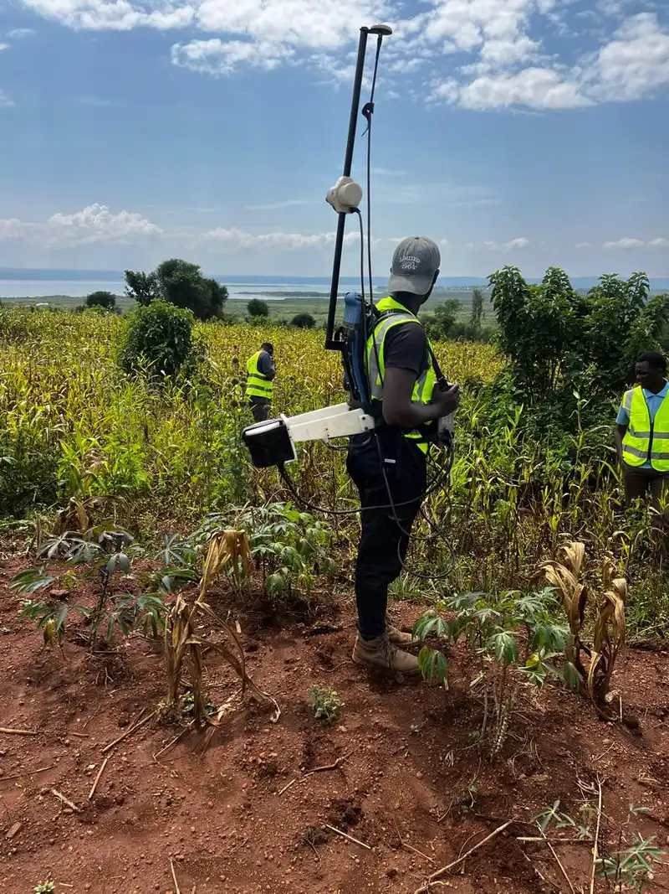

Rapid, high-resolution drone magnetics with the AeroSmartMag Overhauser sensor on a DJI M300 RTK — the first of its kind operated by a Ugandan company, based in Kampala. Map mineral targets and geological structures across thousands of hectares in days, not weeks.
A drone magnetic survey is an airborne geophysical technique that measures variations in the Earth's magnetic field from an unmanned aerial vehicle (UAV). A highly sensitive Overhauser magnetometer is suspended beneath the drone, which autonomously flies a pre-planned lawnmower grid over the survey area. As the platform moves, the sensor records the total magnetic field at regular intervals, producing a dense dataset that is processed into a continuous magnetic anomaly map.
Because different rock types contain varying amounts of magnetic minerals (primarily magnetite), the method reveals subsurface geology without any ground disturbance. A drone magnetic survey in Uganda is particularly powerful for mineral exploration, where it maps the structural framework controlling gold, tin, coltan, and rare-element pegmatite mineralisation. It also supports geological mapping, archaeology, and unexploded ordnance (UXO) detection.
Georesolve Africa is the first Ugandan company to operate an airborne magnetic sensor. From our base in Kampala, Uganda, we pair the AeroSmartMag Overhauser drone magnetometer with the DJI M300 RTK airframe to deliver drone magnetic surveys — often called drone magnetics — across Uganda, Rwanda, Burundi, and the wider East African region. We cover terrain that would be impractical or unsafe for ground crews, at a fraction of the cost of conventional helicopter-borne surveys.
Georesolve operates the AeroSmartMag Overhauser drone magnetometer, a purpose-built airborne magnetic system, mounted on the DJI Matrice 300 RTK (M300 RTK) unmanned aircraft.
| Component | Specification |
|---|---|
| Sensor | AeroSmartMag portable Overhauser (OVH) magnetometer with horizontal and vertical orientation clamps on a carbon frame |
| Console | AeroSmartMag console with built-in multi-band GNSS for timing and positioning |
| GNSS antenna | External helical multi-band GNSS antenna with SMA connector for centimetre-level RTK positioning |
| Suspension | ASM suspension rope for stable sensor flight and vibration dampening |
| Connectivity | USB and USB-C cables for data download and system configuration |
| Transport | Padded transportation case for field deployment across East Africa |
| Airframe | DJI Matrice 300 RTK (M300 RTK) — industrial-grade UAV with 55-minute flight endurance, RTK positioning, and all-weather capability |
| Sensor type | Overhauser effect — high sensitivity, low power consumption, no heading error |
For ground-based follow-up on identified anomalies, Georesolve also operates the GSM 19 Overhauser walking magnetometer with built-in GPS, enabling detailed traverses at higher spatial resolution.
Target generation for gold, cassiterite, coltan, pegmatite-hosted Li-Sn-Ta, and iron ore across Uganda and East Africa.
Rapid mapping of lithological contacts, dykes, and intrusive bodies over large areas with no ground access required.
Delineation of faults, shear zones, and structural corridors that control fluid flow and mineralisation.
Safe, rapid detection of unexploded ordnance and buried metallic objects on construction or brownfield sites.
Non-invasive mapping of buried structures, hearths, and ferrous features at archaeological sites.
Mapping of dyke-bound aquifer compartments and depth-to-magnetic basement for civil engineering projects.
Every drone magnetic survey is delivered as a complete, ready-to-interpret data package:

Georesolve delivered an integrated mineral exploration programme combining ground magnetics, deep Electrical Resistivity Tomography (ERT), and Induced Polarisation (IP) surveys for pegmatite-hosted cassiterite, coltan, and cobalt mineralisation in the Rweru Sector.
The magnetic component mapped the structural framework and delineated subsurface magnetic bodies associated with the pegmatite swarm. Anomalies identified from the magnetic data guided the placement of ERT and IP profiles, which in turn imaged the pegmatite bodies in detail and defined drill targets for follow-up exploration.
A drone magnetic survey is an airborne geophysical method that measures the Earth's magnetic field from an unmanned aerial vehicle (UAV). A magnetometer sensor is suspended beneath the drone, which flies in a lawnmower grid pattern over the survey area. The result is a high-resolution magnetic anomaly map used to detect mineral deposits, geological structures, and buried magnetic bodies without any ground disturbance.
A drone magnetic survey can cover 5 to 15 square kilometres per field day depending on line spacing, terrain, and wind conditions. This is significantly faster than walking ground magnetics, making it ideal for regional reconnaissance and first-pass target generation across large exploration licenses in Uganda and the wider East African region.
Georesolve uses the AeroSmartMag Overhauser drone magnetometer mounted on a DJI M300 RTK platform. The system includes a console with built-in multi-band GNSS, a portable Overhauser sensor with horizontal and vertical orientation clamps on a carbon frame, an external helical multi-band GNSS antenna, an ASM suspension rope, and USB/USB-C connectivity. Georesolve is the first Ugandan company to operate this airborne magnetic sensor.
Drone magnetics flies the sensor above the ground in a controlled grid, enabling rapid coverage of large areas and access to terrain that is difficult or unsafe to walk. Ground magnetics uses a walking magnetometer (such as the GSM 19 Overhauser) and delivers higher near-surface resolution along traverses. The two methods are complementary: drone magnetics for regional mapping and target generation, ground magnetics for detailed follow-up on identified anomalies.
You receive a total magnetic field anomaly map, a residual magnetic field grid, 2D and 3D inversions where requested, an interpreted structural lineament map, GIS-ready XYZ and GeoTIFF data layers, and a comprehensive technical report. All data is delivered in formats compatible with QGIS, ArcGIS, and major geophysical interpretation software.
Drone magnetics does not detect gold directly, but it maps the magnetic minerals and geological structures that host mineralisation. Magnetic surveys are highly effective for delineating banded iron formations, mafic and ultramafic bodies, shear zones, and structural traps that control gold, cassiterite, coltan, and other mineral deposits. The method is a proven first step in any exploration programme in Uganda and East Africa.
Yes. Georesolve Africa is a Kampala-based drone magnetics and airborne geophysical survey company. Our drone magnetic survey operations are planned and managed from our Kampala office, and we fly surveys across Uganda, Rwanda, Burundi, and the wider East African region. Whether you need a first-pass regional magnetic survey for an exploration licence near Kampala or a large reconnaissance programme elsewhere in Uganda, contact our Kampala team for a tailored quote.
Talk to Georesolve Africa about a drone magnetic survey for your exploration license, geological mapping programme, or structural study in Kampala, Uganda, and across East Africa.
Request a Quote